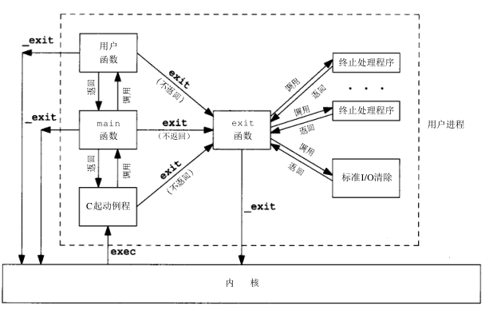
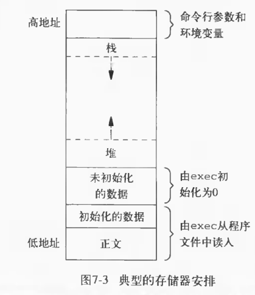
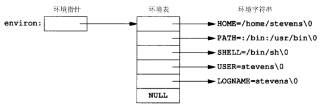
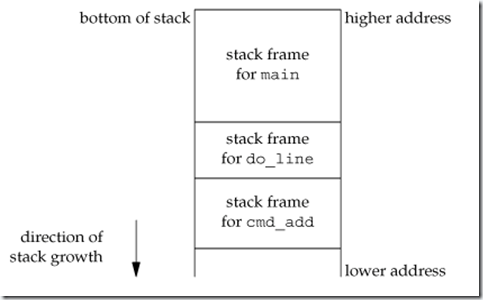

进程环境
Table of Contents
本章主要说明： 当执行程序时其main函数是如何被调用的 进程终止的不同方式 命令行参数是如何传送给执行程序的 典型的存储器布局是什么样式 如何分配另外的存储空间进程 如何使用环境变量 longjmp 和 setjmp 函数以及它们与栈的交互作用 进程的资源限制
main函数
C程序总是 从 main 函数开始执行 ：
- argc : 命令行参数的数目
- argv : 指向参数的各个指针所构成的数组
/** * 主函数 * * argc: 命令行参数的数目 * argv: 指针数组，其元素是指向各个命令行参数的字符串指针 * * return: 返回值 * */ int main(int argc, char *argv[]);
当内核使用一个 exec 函数 起动C程序 时，在 调用main函数 前先调用一个 特殊的起动例程 ：
- 从 内核 取得 命令行参数 和 环境变量值
- 为调用main函数作好准备
C语言编译的时候会调用链接器(ld)，而链接器会设置这个“特殊的启动例程”为“可执行文件的起始地址”
进程终止
图7-1显示了一个C程序是如何起动的，以及它终止的各种方式

有五种方式使进程终止:
- 正常 终止:
- 从main返回
- 调用 exit
- 调用 _exit
- 异常 终止:
- 调用 abort
- 由一个 信号终止
上节提及的起动例程使得从 main函数 返回后立即调用 exit 函数：
exit(main(argc，argv));
这里将终止例程以C代码形式表示，实际上该例程常常用汇编语言编写
exit和_exit
exit 和 _exit 函数用于 正常终止 一个程序：
- _exit : 立刻进入内核
- exit : 先执行一些 清除处理 (包括调用 执行各终止处理程序 ， 关闭所有标准I/O流 等)，然后进入内核
#include <stdlib.h> /** * * 先执行一些清除处理，然后进入内核终止程序 * * status: 程序终止返回状态 * */ void exit(int status); #include <unistd.h> /** * 立刻进入内核终止程序 * * status: 程序返回状态 * */ void _exit(int status);
exit函数总是执行一个标准I/O库的清除关闭操作：对于所有打开流调用fclose函数，这使得缓存中的所有数据都被刷新(写到文件上)
终止状态
exit和_exit 都带一个整型参数，称之为 终止状态 。如果出现下述状况，则该进程的 终止状态是末定义 的：
- 调用这些函数时 不带终止状态
- main执行了一个 无返回值的return语句
- main执行 隐式返回
下列经典性的C语言程序是不完整的，其返回状态未定义
#include <stdio.h> main () { printf ("hello, world \n"); }
大多数UNIX shell都提供 检查一个进程终止状态 的方法：
$ ./src/environ/hello hello, world # 返回状态未定义 $ echo $? 14
向执行此程序的进程 返回终止状态 0
return 0; 或者 exit(0);
atexit
终止处理程序 ：这些函数将在 调用后exit被自动调用
atexit ： 登记 注册终止处理程序
#include <stdlib.h> /** * 注册程序终止函数 * * func: 终止处理函数的函数指针（地址），无参数，无返回值 * * return: 若成功则为 0, 若出错则为非0 * */ int atexit(void (*func)(void));
其中 atexit 的参数是一个 函数地址 ：当调用此函数时 无需向它传送任何参数 ， 也不期望它返回一个值
照ANSIC的规定一个进程可以登记多至32个函数
示例
以下示例说明了如何使用atexit函数
注意：main函数使用了return来隐式调用exit函数
#include "apue.h" static void my_exit1(void); static void my_exit2(void); int main(void) { if (atexit(my_exit2) != 0) err_sys("can't register my_exit2"); if (atexit(my_exit1) != 0) err_sys("can't register my_exit1"); if (atexit(my_exit1) != 0) err_sys("can't register my_exit1"); printf("main is done\n"); return(0); } static void my_exit1(void) { printf("first exit handler\n"); } static void my_exit2(void) { printf("second exit handler\n"); }
exit以 登记相反的顺序 调用终止函数
$ ./src/environ/doatexit main is done first exit handler first exit handler second exit handler
同一函数如果被登记多次，则也会被调用多次
小结
- 内核使程序执行：调用 exec 函数
- 进程 自愿 终止： 显式 或 隐式 地调用 exit 或 _exit 函数
- exit函数：首先调用各终止处理程序，然后按需多次调用fclose关闭所有打开流
- 进程 非自愿 终止：通过 信号量
命令行参数
调用 exec 函数可将 命令行参数 传递给被 执行的新程序
打印所有命令行参数
ANSIC和POSIX.1都要求 argv[argc] 是一个空指针结尾，所以 循环可以通过空指针判断来中断
#include <stdio.h> int main(int argc, char *argv[]) { int i; //echo all command line args for(i = 0; argv[i] != NULL; i++) printf("argv[%d]: %s\n", i, argv[i]); return 0; }
argv[i] != NULL 等价于 i < argc
argv的第一个字符串：被执行的程序路径名
$ ./src/environ/arg arg1 TEST foo argv[0]: ./src/environ/arg argv[1]: arg1 argv[2]: TEST argv[3]: foo
C程序内存模型
存储器布局
C程序一直由下列几部分组成：
正文段
CPU执行的 机器指令 部分，也被称为 代码段
通常正文段是可共享的，所以即使是经常执行的程序(如文本编辑程序、C编译程序、shell等)在存储器中也只需有一个副本 另外正文段常常是只读的，以防止程序由于意外事故而修改其自身的指令
初始化数据段
此段也被称为 数据段 ，它包含了程序中 需赋初值的变量 。 任何函数之外声明会把变量的初值 存放在初始化数据段中：
int maxcount=99;
非初始化数据段
通常将此段称为 bss段 ，在程序开始执行之前， 内核将此段初始化为0
例如： 在函数外声明位初始化的数组
long sum[1000];
栈
自动变量 以及每次 函数调用时所需保存的信息 都存放在此段中
每次函数调用时其 返回地址、以及调用者的 环境信息(例如某些机器寄存器)都存放在栈中 然后新被调用的函数在栈上为其 自动 和 临时变量分配存储空间 通过以这种方式使用栈C函数可以递归调用
堆
在堆中进行 动态存储 分配
由于历史上形成的惯例，堆位于 非初始化数据段顶(bss) 和栈底(stack bottom)之间
存储器总结
图7-3显示了C程序在内存中的一种典型安排方式：

对于VAX上的4.3+BSD而言 1. 正文段从0位置开始，栈顶则在0x7fffffff之下开始，堆顶和栈底之间未用的虚地址空间很大 2. 栈一般是从高地址往低地址增长 3. 堆一般是从低地址往高地址增长 4. 末初始化数据段的内容并不存放在磁盘程序文件中，需要存放在磁盘程序文件中的段只有正文段和初始化数据段
#size(1)命令报告正文段、数据段和bss段的长度(单位:字节)： $ size /usr/bin/cc /bin/sh text data bss dec hex filename 7537 800 0 8337 2091 /usr/bin/cc 712531 37360 18656 768547 bba23 /bin/sh
共享库
现在很多UNIX系统支持 共享库 。共享库使得 可执行文件中不再需要包含常用的库函数 ，而只需在 所有进程都可存取的存储区中保存这种库例程的一个副本 ：
- 程序第一次执行或者第一次调用某个库函数时，用 动态连接 方法将程序与共享库函数相链接。这 减少了每个可执行文件的长度 ，但 增加了一些运行时间开销
- 可以用库函数的新版本代替老版本 而 无需对使用该库的程序重新链接编辑 (假定参数的数目和类型都没有发生改变)
动态内存管理
分配内存
ANSI C说明了三个用于存储空间动态分配的函数：
- malloc ： 分配指定字节数的存储区 ，此存储区中的初始值不确定
- calloc ： 为指定长度的对象分配能容纳其指定个数的存储空间 ，该空间中的每一位(bit)都 初始化为0
realloc ： 更改以前分配区的长度(增加或减少)
- 当增加长度时可能需 将以前分配区的内容移到另一个足够大的区域 ，而新增区域内的初始值则不确定
#include <stdlib.h> /** * 根据所指定的size分配空间 * * size: 分配空间大小 * * return: 成功时返回 空间的首址，失败时返回 NULL * */ void *malloc(size_t size); /** * 分配nobj 个 size大小的连续空间 * * nobj: object数量 * size: object大小 * * return: 成功时将该段内存 全部清零并返回 其首址，失败时返回 NULL * */ void *calloc(size_t nobj, size_t size); /** * 为已分配的ptr重新分配一块大小为newsize的空间 * * ptr: 已经分配的空间指针 * newsize: 新的空间大小 * * return: 成功时返回空间的首址，失败时返回NULL; * */ void *realloc(void *ptr, size_t newsize);
释放内存
free ： 释放 ptr指向的存储空间
#include <stdlib.h> /** * 释放指定的ptr对应的地址空间 * * ptr: 已经分配的地址空间指针 * * return: 无返回 * */ void free(void *ptr)
实现细节
分配函数通常通过系统调用 sbrk(2) 实现来实现
- 分配函数所返回的指针一定是 适当对齐 的，遵守 最苛刻的对齐要求 ，使其可用于任何数据对象
- 分配函数所返回的指针可 用于任何指针 ，不需要强制转换
- 大多数实现所分配的 存储空间比所要求的要稍大一些 ，额外的空间用来记录管理信息：
- 分配块的长度
- 指向下一个分配块的指针等等
- free函数 被释放的空间通常被送入可用存储区池 ，以后再调用分配函数时再分配，但是这 并不会减小进程的存储开销
也就是说free释放的空间并不会返回给内核，供其他程序使用
注意事项
- 分配函数返回的指针 不应该参与任何指针运算
- realloc可能会 移动存储区 ，任何指向原来分配区内部的指针都可能失效
- realloc的最后一个参数是 存储区的newsize(新长度) ，而不是新、旧长度之差
- free调用完毕 不会设置对应的ptr指针为NULL ，若再次直接访问ptr指向的地址是不安全的操作
- 释放一个已经释放了的块 和 调用free时所用的指针不是三个alloc函数的返回值 都会发生段异常
- 分配而不再使用的堆空间，应尽快通过free回收 ，否则会出现 内存泄漏
alloca函数
alloca ：类似于malloc，但是不是在堆上分配空间，而是在函数对应的 栈内分配空间
- 优点：函数调用结束， 自动释放
- 缺点：并 不是所有系统都支持
环境变量表
每个程序都接收到一张环境表。与参数表类似， 环境表 也是一个 字符指针数组 ，其中每个指针包含一个字符串的地址。全局变量 environ 则 包含了该指针数组的地址
extern char **environ;
如果该环境包含五个字符串，那么它看起来可能如图7-2中所示：

- 环境指针 ： environ
- 环境表 ：environ指向的 指针数组 ，以 NULL 结尾
- 环境变量 ：各指针指向的 字符串 ，以 '\0' 结尾
按照惯例环境由:
name=value
这样的字符串组成，这与图7-2中所示相同。 大多数环境变量名完全由大写字母组成 ，但这也只是一个惯例
常见环境变量
POSIX.1和XPG3定义了某些环境变量。表7-1列出了由这两个标准定义并受到SVR4和4.3+BSD支持的环境变量：
|
变量 |
标准 | 实现 |
说明 |
||
| POSIX.1 | XPG3 | SVR4 | 4.3+BSD | ||
| HOME | • | • | • | • | 初始目录 |
| LANG | • | • | • | 本地语言 | |
| LC_ALL | • | • | • | 本地编码 | |
| LC_COLLATE | • | • | • | 排序编码 | |
| LC_CTYPE | • | • | • | 输入编码 | |
| LC_MONETARY | • | • | • | 货币编码 | |
| LC_NUMERIC | • | • | • | 数字编码 | |
| LC_TIME | • | • | • | 日期编码 | |
| LOGNAME | • | • | • | • | 登录名 |
|
PATH |
• |
• |
• |
• |
可执行文件搜 索路径 |
| TERM | • | • | • | • | 终端类型 |
| TZ | • | • | • | • | 本地时区 |
环境变量函数
除了取环境变量值，有时也需要设置环境变量，或者是改变现有变量的值，或者是增加新的环境变量。但并不是所有系统都支持这种能力。表7-2列出了由不同的标准及实现支持的各种函数：
|
变量 |
标准 | 实现 | |||
| ANSI C | POSIX.1 | XPG3 | SVR4 | 4.3+BSD | |
| getenv | • | • | • | • | • |
| putenv | 可能 | • | • | • | |
| setenv | • | ||||
| unsetenv | • | ||||
| clearenv | 可能 | ||||
getenv
getenv ： 读取 环境变量
#include <stdlib.h> /** * 根据给定的环境变量名字返回其值 * * name: 环境变量名 * * return: 指向 与name关联的value的指针，若未找到则为 NULL * */ char *getenv(const char *name);
注意：应当使用 getenv 从环境中取一个环境变量的值，而不是直接存取environ指针！
putsenv, setenv, unsetenv
putenv ：使用形式为 name=value 的 字符串将其放到环境表 中。如果name 已经存在 ，则 先删除其原来的定义
#include <stdlib.h> /** * 把变量放进环境表中 * * str: 形式为name=value的字符串 * * return: 若成功则为 0，若出错则为 非0 * */ int putenv(char *str);
setenv ：设置名字为 name的环境变量 其 值为value 。如果在环境中name已经存在，那么：
- 若 rewrite非0 ，则首先 删除其现存的定义
若 rewrite为0 ，则 不删除其现存定义 (name不设置为新的value，而且也不出错)
#include <stdlib.h> /** * 设置名字为name的环境变量其值为value * * name: 环境变量名字 * value: 要设置的环境变量值 * rewrite: 是否覆盖 * * return: 若成功则为 0，若出错则为 非0 * */ int setenv(const char *name, const char *value, int rewrite);
unsetenv ： 删除环境变量名为name的定义
- 即使环境表中不存在对应的变量也不会出错
#include <stdlib.h> /** * 解除环境变量定义 * * name: 环境变量名 * * return: 无返回 * */ void unsetenv(const char *name);
实现细节
环境表 (指向实际name=value字符串的指针数组)和环境字符串典型地存放在 进程存储空间的顶部 (栈之上)
- 删除： 找到对应的字符串指针 ，然后将 所有环境表中后面元素 指向原来的 下移一个位置
- 替换：
- 新value的长度 少于或等于 现存value的长度 ：只要 在原字符串所用空间中写入新字符串
- 如果 新value的长度 大于 原长度 ：必须调用 malloc 为 新字符串分配空间 ，然后将新字符写入该空间中，最后使 环境表中针对name的指针指向新分配区
- 增加：首先调用 malloc 为 name=value 分配空间 ，然后将 该字符串写入此空间 中，然后：
- 第一次增加一个新name：必须调用 malloc 为 新的指针表分配空间 。将 原来的环境表复制到新分配区 ，并将指向新 name=value 的 指针存在该指针表的表尾 ，接着将一个 NULL指针存在其后 ，最后使 environ 指向新指针表
- 非第一次增加一个新name：则可知以前已调用malloc在堆中为环境表分配了空间，所以只要调用 realloc 分配 比原空间多存放一个指针的空间 。然后将该指向新 name=value 字符串的指针存放在该表表尾 ，最后在 后面跟着一个NULL指针
这意味着：如果第一次在环境表中增加一个frame，环境表会被移至堆中 但是此表中的大多数指针仍指向栈顶之上的各name=value字符串
栈间跳转
cmd_add
先看以下程序的骨干部分：
- 主循环是从标准输入读一行，然后调用 do_line 处理
- do_line该函数调用 get_token 从该输入行中取下一个记号
- 假设每一行中的第一个记号对应于某条命令，比如记号是'5'对应加法，就调用cmd_add函数
- cmd_add函数继续调用get_token获得其余参数，最后执行的加法逻辑
#include "apue.h" #define TOK_ADD 5 void do_line(char *); void cmd_add(void); int get_token(void); int main(void) { char line[MAXLINE]; while (fgets(line, MAXLINE, stdin) != NULL) do_line(line); exit(0); } char *tok_ptr; /* global pointer for get_token() */ void do_line(char *ptr) /* process one line of input */ { int cmd; tok_ptr = ptr; while ((cmd = get_token()) > 0) { switch (cmd) { /* one case for each command */ case TOK_ADD: cmd_add(); break; } } } void cmd_add(void) { int token; token = get_token(); /* rest of processing for this command */ } int get_token(void) { /* fetch next token from line pointed to by tok_ptr */ }
图7-4显示了调用了cmd_add之后栈的大致使用情况：

自动变量的存储单元在每个函数的栈桢中 ：
- 数组line 在 main的栈帧 中
- 整型cmd 在 do_line的栈帧 中
- 整型token 在 cmd_add的栈帧 中
一个经常会遇到的问题是：如何处理非致命性的错误？ 例如cmd_add函数发现一个错误，比如说一个无效的数 那么它可能先打印一个出错消息，然后希望忽略输入行的余下部分，返回main函数并读下一输入行 如果不得不以检查返回值的方法逐层返回，那就会变得非常麻烦
解决这种问题的方法就是使用 非局部跳转 。这不是在一个函数内的普通的C语言goto语句，而是在 栈上跳过 若干调用帧 返回到当前函数调用路径上的一个函数内
setjmp, longjmp
- setjmp ： 栈定位信息 保存到 jmp_buf变量 env 中
- jmp_buf：一种 特殊数据类型 ，某种形式的 数组 ，其中存放在调用 longjmp 时能用来 恢复栈状态的所有信息 ，其中包括 当初的寄存器上的值
longjmp ： 跳转到保存好的变量 env 上 ，然后返回 val
- 多个longjmp 跳到 同一个setjmp处 时，就可以 通过返回的不同val值进行区别
#include <setjmp.h> /** * 设置一个以 env 为标识的栈定位点 * * env: 跳转点 * * return: 若直接调用则为 0，若从longjmp返回则为 非0 * */ int setjmp(jmp_buf env); /** * 于跳转到env所定位的setjmp函数处 * * env: 跳转点 * val: 跳转回去后setjmp的返回值 * * return: 无返回 * */ void longjmp(jmp_buf env, int val);
cmd_add2
main函数中 设定跳转点 jmpbuffer ，其 当前返回值是0
jmp_buf jmpbuffer; int main(void) { char line[MAXLINE]; if (setjmp(jmpbuffer) != 0) printf("error"); while (fgets(line, MAXLINE, stdin) != NULL) do_line(line); exit(0); }
在cmd_add2函数中如果出错，则使用 longjmp 跳转 到 jmpbuffer 保存的 栈定位点 上，这时候 setjmp返回的值是1 ，也就是 cmd_add2中longjmp的第二个参数 。同样可以在 get_token 函数内调用 longjmp(jmpbuffer,2) ，这使得 main函数可以对 不同的longjmp调用点 进行区别对待
void cmd_add2(void) { int token; token = get_token(); if (token < 0) /* an error has occurred */ longjmp(jmpbuffer, 1); /* rest of processing for this command */ }
volatile变量
全局和静态变量的值在执行longjmp后保持不变
当发生跳转后，在main函数中的自动变量和寄存器变量的状态如何？ 当longjmp返回到main函数时，这些变量的值是否能恢复到以前调用setjmp时的值(即滚回原先值) 或者这些变量的值保持为调用do_line时的值(do_line调用cmd_add，cmd_add又调用longjmp)?
存放在寄存器内的变量会回滚 到调用setjmp的时候，而 存放在内存中的变量并不会回滚
如果有一个自动变量，而又 不想使其值滚回 ，则必须定义其为 volatile
#include <setjmp.h> static void f1(int, int, int); static void f2(void); static jmp_buf jmpbuffer; int main(void) { int count; register int val; volatile int sum; count = 2; val = 3; sum = 4; if(setjmp(jmpbuffer) != 0){ printf("atfer longjmp: count = %d, val = %d, sum = %d\n", count, val, sum); exit(0); } count = 97; val = 98; sum = 99; f1(count, val, sum); } static void f1(int i, int j, int k) { printf("in f1(): count = %d, val = %d, sum = %d\n", i, j, k); f2(); } static void f2(void) { longjmp(jmpbuffer, 1); }
从下面测试代码可以看出：
- 不开启编译优化 ，哪怕寄存器变量都会被保存在内存中，跳转回来后这些变量 都不回滚
而开启优化后 只有volatile变量才保存在内存中 ， 其他变量 都可能被 保存到寄存器 中，这些变量往往都会 回滚到原来的值
#不适用编译器优化的时候 $ cc -o volatileExample1 volatileExample.c $ ./volatileExample1 in f1(): count = 97, val = 98, sum = 99 #不优化的变量保存在内存中，这些变量不会回滚，还是修改后的值 atfer longjmp: count = 97, val = 98, sum = 99 #使用编译器优化的时候 $ cc -O -o volatileExample2 volatileExample.c $ ./volatileExample2 in f1(): count = 97, val = 98, sum = 99 #编译优化后变量会尽量保存到寄存器，自动、寄存器变量将回滚到原来，但是volatile变量还是使用修改后的，因为volaile变量永远保存在内存中 atfer longjmp: count = 2, val = 3, sum = 99
如果要编写可移植的非局部跳转，则必须使用volatile属性！
自动变量陷阱
open_data的函数：打开了一个标准I/O流，然后为该流设置缓存
#include <stdio.h> #define DATAFILE "datafile" FILE *open_data(void) { FILE *fp; char databuf[BUFSIZ]; /* setvbuf makes this the stdio buffer */ if ((fp = fopen(DATAFILE, "r")) == NULL) return(NULL); if (setvbuf(fp, databuf, _IOLBF, BUFSIZ) != 0) return(NULL); return(fp); /* error */ }
当open_data返回时，它在栈上所使用的空间将由下一个被调用函数的栈帧使用 但是标准I/O库函数仍将使用原先为databuf在栈上分配的存储空间作为该流的缓存 这就产生了冲突和混乱
因此 自动变量的函数已经返回 后， 必须不再引用 这些自动变量。如果还需这些变量，那就：
- extern : 全局 变量
- static : 静态 变量
- malloc / calloc : 使用 堆上的动态分配内存
资源限制
- getrlimit ： 查询 进程的资源限制
- setrlimit ： 更改 进程的资源限制
#include <sys/resource.h> /** * 查询资源限制 * * resource: 代表资源的常量 * rlptr: 资源限制结构指针 * * return: 若成功则为0，若失败则为 非0 * */ int getrlimit(int resource, struct rlimit *rlptr); /** * 修改资源限制 * * resource: 代表资源的常量 * rlptr: 资源限制结构指针 * * return: 若成功则为 0，若失败则为 非0 * */ int setrlimit(int resource, const struct rlimit *rlptr);
resource常量
resource参数取下列值之一：
| 资源常量名 | 支持系统 | 说明 |
| RLIMIT_CORE | SVR4及4.3+BSD | core文件的最大字节数，若其值为0则阻止创建core文件 |
| RLIMIT_CPU | SVR4及4.3+BSD | CPU时间的最大量值(秒)，当超过此软限制时，向该进程发送SIGXCPU信号 |
| RLIMIT_DATA | SVR4及4.3+BSD | 数据段的最大字节长度。初始化数据、非初始化数据以及堆的总和 |
| RLIMIT_FSIZE | SVR4及4.3+BSD | 可以创建的文件的最大字节长度。当超过此软限制时，则向该进程发送SIGXFSZ信号 |
| RLIMIT_MEMLOCK | 4.3+BSD | 锁定在存储器地址空间(尚未实现) |
| RLIMIT_NOFILE | SVR4 | 每个进程能打开的最多文件数 |
| RLIMIT_NPROC | 4.3+BSD | 每个实际用户ID所拥有的最大子进程数 |
| RLIMIT_OFILE | 4.3+BSD | 与RLIMIT_NOFILE相同 |
| RLIMIT_RSS | 4.3+BSD | 最大驻内存集字节长度(RSS) |
| RLIMIT_STACK | SVR4及4.3+BSD | 栈的最大字节长度 |
| RLIMIT_VMEM | SVR4 | 可映照地址空间的最大字节长度 |
注意：并非所有资源限制都受到每个系统的支持
rlimit结构
在更改资源限制时，须遵循下列三条规则：
- 任何一个进程都可将一个 软限制 更改为 小于或等于 其 硬限制
- 任何一个进程都可 降低 其 硬限制值 ，但它必须 大于或等于 其 软限制值 ，这种降低对普通用户而言是 不可逆反 的
只有 超级用户 可以 提高 硬限制
struct rlimit { rlim_t rlim_cur; /* soft limit: current limit */ rlim_t rlim_max; /* hard limit: maximum value for rlim_cur */ };
一个 无限量的限制 由常数 RLIM_INFINITY 指定
实例
打印linux系统支持的某些进程资源的当前软限制和硬限制：
#include "apue.h" #include <sys/resource.h> #define FMT "%10ld " #define doit(name) pr_limits(#name, name) static void pr_limits(char *, int); int main(void) { #ifdef RLIMIT_AS doit(RLIMIT_AS); #endif doit(RLIMIT_CORE); doit(RLIMIT_CPU); doit(RLIMIT_DATA); doit(RLIMIT_FSIZE); #ifdef RLIMIT_LOCKS doit(RLIMIT_LOCKS); #endif #ifdef RLIMIT_MEMLOCK doit(RLIMIT_MEMLOCK); #endif doit(RLIMIT_NOFILE); #ifdef RLIMIT_NPROC doit(RLIMIT_NPROC); #endif #ifdef RLIMIT_RSS doit(RLIMIT_RSS); #endif #ifdef RLIMIT_SBSIZE doit(RLIMIT_SBSIZE); #endif doit(RLIMIT_STACK); #ifdef RLIMIT_VMEM doit(RLIMIT_VMEM); #endif exit(0); } static void pr_limits(char *name, int resource) { struct rlimit limit; if (getrlimit(resource, &limit) < 0) err_sys("getrlimit error for %s", name); printf("%-14s ", name); if (limit.rlim_cur == RLIM_INFINITY) printf("(infinite) "); else printf(FMT, limit.rlim_cur); if (limit.rlim_max == RLIM_INFINITY) printf("(infinite)"); else printf(FMT, limit.rlim_max); putchar((int)'\n'); }
运行结果：
$ ./src/environ/rlimitExample # 资源名 软限制 硬限制 RLIMIT_AS (infinite) (infinite) RLIMIT_CORE 0 (infinite) RLIMIT_CPU (infinite) (infinite) RLIMIT_DATA (infinite) (infinite) RLIMIT_FSIZE (infinite) (infinite) RLIMIT_LOCKS (infinite) (infinite) RLIMIT_MEMLOCK 65536 65536 RLIMIT_NOFILE 1024 4096 RLIMIT_NPROC 15591 15591 RLIMIT_RSS (infinite) (infinite) RLIMIT_STACK 8388608 (infinite)
资源限制影响到调用进程并由其子进程继承 这就意味着为了影响一个用户的所有后续进程，需要将进程资源放在 shell 中进行
事实上sh，bash也都具有 ulimit(1) 命令来查看和修改进程资源限制：
$ ulimit -a #查看所有bash下的进程资源限制 core file size (blocks, -c) 0 # RLIMIT_CORE data seg size (kbytes, -d) unlimited # RLIMIT_DATA scheduling priority (-e) 0 file size (blocks, -f) unlimited # RLIMIT_FSIZE pending signals (-i) 15591 max locked memory (kbytes, -l) 64 # RLIMIT_MEMLOCK max memory size (kbytes, -m) unlimited # RLIMIT_RSS open files (-n) 1024 # RLIMIT_NOFILE pipe size (512 bytes, -p) 8 POSIX message queues (bytes, -q) 819200 real-time priority (-r) 0 stack size (kbytes, -s) 8192 # RLIMIT_STACK cpu time (seconds, -t) unlimited # RLIMIT_CPU max user processes (-u) 15591 # RLIMIT_NPROC virtual memory (kbytes, -v) unlimited # RLIMIT_AS file locks (-x) unlimited # RLIMIT_LOCKS